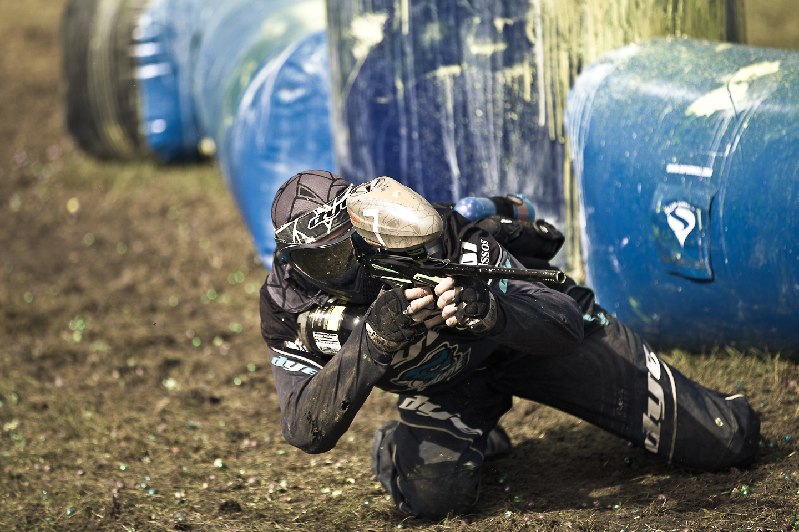

Foorumeilla on suositeltu myös pikkusikarien jauhamista, ja piipputupakka lienee myös aika tunnettu juttu. Hinta vähän pompsahtaa joten eri merkkien testailua en ole kauheasti harrastanut. Kertokaa kokemuksia kommenteissa.
Hyvä määrä tupakkia ekan satsin tekemiseen on mielestäni kolme toppaa, sillä epäonnistuminen ainemäärien kanssa on paljon vähemmän todennäköistä kuin yhden topan kanssa säätäessä. Myöskin yhdestä topasta tulee vain noin reilu kiekollinen valmista nuuskaa, ja kuka sitä jaksaa koko ajan tehdä. Oma vakiomääräni on kuusi toppaa, josta tulee aika mukavasti tornillinen.
Eli ihan tavallista ruokasoodaa jota löydät ruokakaupan hyllystä puoli-ilmaiseksi. Huomioi, että valmistusainelistassa on listattu vain "natriumbikarbonaatti" tai "Nostatusaine (natriumbikarbonaatti)".
Suolan tarkoituksena on antaa makua ja toimia säilöntäaineena. Jos tuntuu että nuuskasi on oudon mautonta tai teet sitä isompia määriä kerralla ja se pilaantuu, lisää suolan määrää huoletta seuraavaan erään. Varaa oletusarvona noin 1 tl / toppa. Itse käytän suolana Meiran hienoa merisuolaa, 850 gramman paketti.Mikä tahansa suola (ilman muita mausteita tms.) toiminee ihan loistavasti. Hienojakoisuus helpottaa veteen liottaessa. Savusuola on eräs mielenkiintoinen vaihtoehto, en ole tätä kokeillut mutta voisin kuvitella sen tuovan nuuskaan savuaromin.
Ei missään nimessä välttämätöntä mutta voi käyttää teetä, yrttejä, savuaromia, alkoholia jne. Jos käytät mausteena jotakin kuivaa, vaikkapa jotain yrttiä, se kannattaa lisätä jauhamisvaiheessa mukaan. Jos taas nestettä, korvaa osa ohjeessa mainitusta vedestä halumallasi nesteellä. Jos nesteesi sisältää alkoholia, sen kanssa kannattaa olla varovainen sillä maku tulee jo pienestä määrästä aika vahvaksi! Mausteiden kanssa kokeilujen tekeminen on suositeltavaa puuhaa ja tuloksia kannattaa jakaa muillekin.
Tässä vallinnee suurin ero nuuskanväsäilijöiden keskuudessa: käyttääkö maissitärkkelystä ja kuinka paljon. Maissitärkkelyksen funktiona on tuoda nuuskalle kiinteämpi koostumus, ja toimia samalla "täyteaineena" sillä grammahinta on aika huomattavasti tupakkaa alhaisempi.